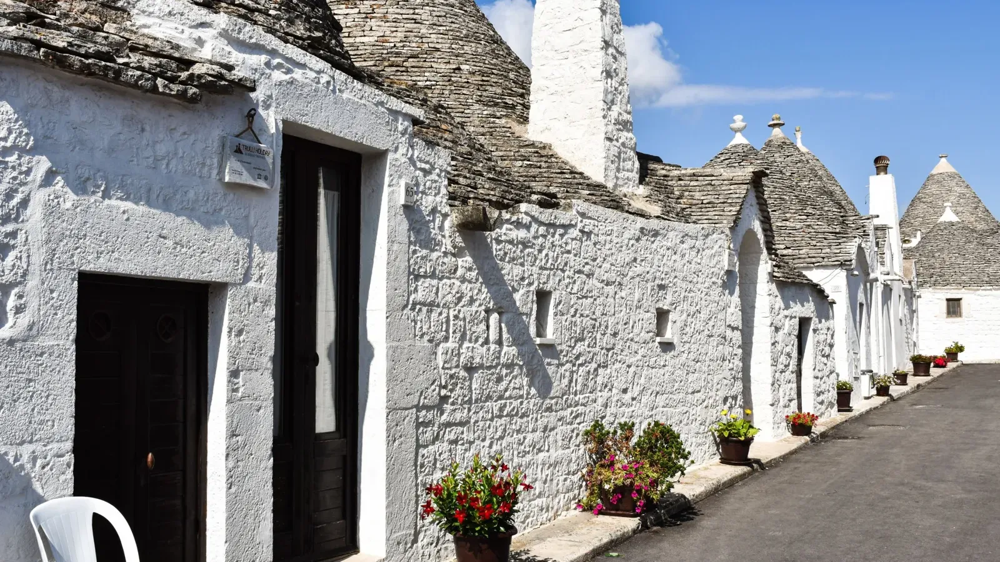

The short answer
Land in Bari, pick up a car and sleep 3 nights on the coast between Polignano a Mare and Monopoli: from there you see Bari, the trulli of Alberobello and the white towns of the Valle d'Itria. Then drive south to Lecce for 3 nights, with days on the Salento coast (Otranto, the Adriatic cliffs, the Ionian beaches). Fly home from Brindisi, 40 minutes from Lecce. No backtracking, short drives.
The route at a glance
| Day | Where | Sleep |
|---|---|---|
| 1 | Bari old town and seafront | Monopoli / Polignano |
| 2 | Polignano a Mare and Monopoli | Monopoli / Polignano |
| 3 | Alberobello, Locorotondo, Martina Franca | Monopoli / Polignano |
| 4 | Ostuni, then drive to Lecce | Lecce |
| 5 | Lecce | Lecce |
| 6 | Otranto and the Adriatic coast | Lecce |
| 7 | Ionian beaches or Gallipoli, fly from Brindisi | – |
Day by day
Day 1 – Bari
From the airport it's about 20 minutes to the centre. Walk Bari Vecchia: the Basilica of San Nicola, the Swabian castle and the lane where women make orecchiette by hand outside their doors. Have a panzerotto or focaccia barese, then drive 30–40 minutes south to your coastal base.
Day 2 – Polignano a Mare and Monopoli
Polignano sits on limestone cliffs above the sea: the Lama Monachile cove, the terraces over the water and the old town. It's very busy in summer, so go early. In the afternoon, Monopoli has a lovely harbour full of blue boats, a quieter old town and small rocky coves nearby for a swim. See places to stay in Monopoli.
Day 3 – Alberobello and the Valle d'Itria
Alberobello is the town of the trulli (a UNESCO site): the Rione Monti is the most photographed, the Aia Piccola is quieter and more authentic. Arrive before 10:00 to avoid the tour buses. Then Locorotondo, a circular white town among vineyards, and Martina Franca, baroque and elegant, perfect for an aperitivo. You can even sleep one night in a trullo.
Day 4 – Ostuni, then south
Ostuni, the "white city", is a maze of whitewashed lanes on a hill with olive groves down to the sea. Visit in the morning, have lunch, then drive about 1h15 to Lecce.
Day 5 – Lecce
The "Florence of the South": churches and palaces in soft, golden pietra leccese. Don't miss the Basilica di Santa Croce, Piazza del Duomo and the Roman amphitheatre in Piazza Sant'Oronzo. Try a pasticciotto for breakfast and a caffè leccese (iced coffee with almond milk). Compare hotels in Lecce.
Day 6 – Otranto and the Adriatic coast
Otranto has a castle, a cathedral with an extraordinary floor mosaic and crystal-clear water. Drive the coast road south: the Grotta della Poesia natural pool at Roca Vecchia, the cliffs and lighthouse of Capo d'Otranto, and on to Santa Maria di Leuca if you have the energy.
Day 7 – Ionian beaches and departure
The Ionian side has long sandy beaches with shallow, turquoise water (Punta Prosciutto, Porto Cesareo, Pescoluse, the "Maldives of Salento"). Gallipoli has an old town on an island. Then drive to Brindisi airport (about 40 minutes from Lecce; return the car with time to spare).
Adding Matera
Matera, with its cave houses (the Sassi), is in Basilicata but only about an hour from Bari or Alberobello. With 8 days, add it between day 3 and 4 and sleep there one night: the Sassi lit up at night are unforgettable.
What to eat
- Orecchiette with cime di rapa (turnip tops), the regional classic.
- Burrata from Andria and fresh mozzarella.
- Focaccia barese and fried panzerotti.
- Raw seafood in Bari and Polignano, bombette (meat rolls) in the Valle d'Itria butchers.
- Wines: Primitivo and Negroamaro.
Driving and practical tips
- A car really helps: many towns have no direct train. Book it early for summer, see our car rental guide.
- Most old towns are ZTL (restricted traffic zones): park outside the walls. Read our ZTL guide.
- August is hot, crowded and expensive; May, June and September are ideal.
- On the coast, many beaches have paid lidos: look for "spiaggia libera" for the free ones.
- Without a car: trains link Bari, Polignano, Monopoli, Ostuni, Brindisi and Lecce; the Valle d'Itria is served by the slower local railway.
Plan your Puglia road trip
Some links are affiliate links: booking through them costs you nothing extra and helps keep 687 free.
Puglia, stage by stage.
In 687 Italy you build the road trip by stages, with the offline map, driving times, ZTL reminders and the weather. If the sea is too rough for a beach day, NOW rebuilds the rest of the day.
Sources
- Viaggiare in Puglia – official tourism site
- UNESCO – The Trulli of Alberobello
- Aeroporti di Puglia (Bari and Brindisi airports)
- Trenitalia
Checked against these official sites in November 2026. Prices and rules can change: always confirm before you travel.